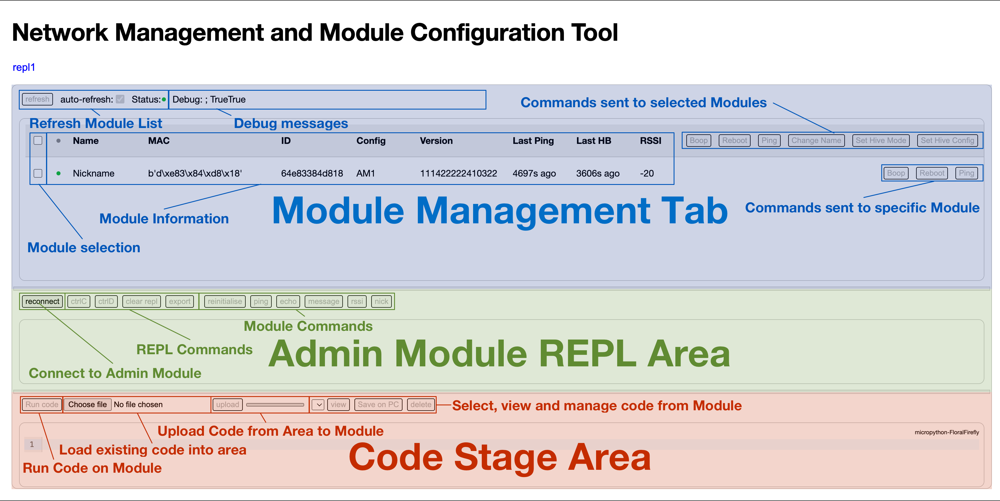
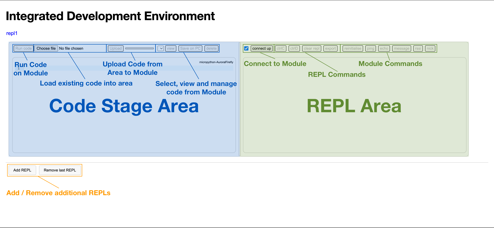

Start
Guide on how to get started with the Smart System Education Platform. Example projects, related materials, and more. This guide provides resources and instructions to help you begin your journey with this innovative educational tool.
Orientation
An overview of the resources in this guide to help you quickly get acquainted with the platform.
Here are some quick links to some of the resources.
Concept & Platform Overview
The Smart System Education Platform (SSP) is a networking-enabled engineering education platform based on Smart Motors, designed to foster hands-on learning, learning through play, and collaborative learning. It aims to provide accessible and inclusive technology for all, addressing challenges like cost and usability often associated with educational robotics, as highlighted in research by Dahal (2024) and others. Inspired by Constructionism by Papert & Harel (1991) and Constructivism by Von Glasersfeld (1982).
The SSP is more than just hardware; it's a complete ecosystem designed to support educators in creating innovative learning experiences. It encompasses hardware modules (like the Smart Motor) with all the possible Grove sensors, networking capabilities, development tools, and comprehensive documentation. The platform is an MVP (Minimum Viable Product) that demonstrates the Smart Motors capabilities and how they can be leveraged into a broader educational robotics system.
Platform Overview: A brief tour of the main features and functionalities, including the website, PyScript IDE, and networking capabilities.
Getting Started with the Smart System Platform
An overview of the various software tools available to support your development and management of the Smart System Platform.
Configuring Smart Modules Using the Network Management UI
The Network Management and Module Configuration Tool allows you to configure and manage your modules, including configuring them for custom interconnected operations.
Step 1: Load Page and Connect
In a first step, load the Network Management and Module Configuration Tool page in the Chrome browser, and connect your Admin Module to your device via USB-C cable.
Step 2: Connect Admin Module to Page
Connect to the Admin Module using the connect button in the REPL Area. Once successfully connected, the greyed out command buttons become active, and the REPL area will display the chip name. The main code of the Admin Module should automatically start, which will be indicated by a regularly occuring heart-beat message.
Troubleshooting: If the command buttons remain greyed out, simply disconnect and reconnect to the device using the disconnect and connect buttons. If the REPL area only displays a blinking block instead of >>>, unplug your Admin Module, replug and try again. If the issue persists, reset your Admin Module using the reset button on the ESP32 SoC-based MBC.
Step 3: Ping and Refresh Module List
Per default,the module list is set to refresh automatically. However, no devices will show up unless the Admin Module has received communications from the device. To find all active modules in your vicinity, you can send out a ping command, to which all active modules will automatically respond with their respective information. The module list will then be updated accordingly.
Troubleshooting: Ensure that your Modules are all turned off and running their default code. If a device is not found, turn it off and on again.
Step 4: Usage
Use the available commands to configure and manage your network of modules in real-time. An easy way to try this without any danger of breaking something is to change the name of a selected module.
Step 5: Module Configuration
The main use of the page is to configure your modules for wireless interaction. You can do so by clicking the configure Set Hive Config button and setting your configuration accordingly. Select the module you would like to configure by clicking its checkbox, and then press the Set Hive Config button. A pop-up window will appear, asking for the mac addresses of modules the module should send its data to. Enter a list of mac addresses here, including the square brackets [], or otherwise for none, leave the field empty. A further pop-up will appear, asking for the mac and respective sensor which the device should expect data from and use for its own output calculation. The format to enter this is as follows: [[mac1, "sensor"], [mac2, "button"]. A table with the modules and their possible inputs and their outputs is listed below. When using multiple data providers, the device will use an average of the normalized data it has received. A further pop-up appears asking for the refresh rate, 100 ms is a good value for this. The subsequent pop-up window asks for the mode, here either logic or continuous can be entered, logic meaning the device will use True/False (rounding discrete values to either 0 or 1), while continuous will calculate a discrete value to be mapped to the output. THe next pop-up will ask for sudo authentication, to bypass this enter True. In the REPL a log message sending the message should appear, and if received and successful, a success message should be received from the configured module. If the message was received but the configuration change failed, a fail message will be returned. If no message is returned, this is an indicator that the recipient has not received the message.
Step 6: AI Module Configuration Assistant
In an effort to the aid with the calculation of the required configuration values for the modules, an AI chatbot has been primed to take in a description of intended network configuration, to which it will return the required command values for the various modules. The primed LLM is linked below.
Step 7: Advanced Management
In the basic version of the tool, only a limited amount of commands has been made available as an introduction, though an experimental version with the full suite of networking commands is linked below.
Developing Networked Smart System Platform Projects with the Custom Web IDE
A custom IDE has been developed using PyScript. This IDE allows you to write and execute Python code directly in your web browser, without the need for software installation. It supports multiple development tabs, making it easier to manage complex projects with multiple networked devices.
The Network Management and Module Configuration Tool allows you to configure and manage your modules, including configuring them for custom interconnected operations.
Step 1: Load Page and Connect
In a first step, load the Custom Web IDE page in the Chrome browser, click the add REPL button, and connect a Module to your device via USB-C cable.
Troubleshooting: If no IDE field appears on the webpage, wait for 10 seconds and then try clicking the add REPL button again.
Step 2: Connect Module to Page
Connect to the Module using the connect button in the REPL Area. Once successfully connected, the greyed out command buttons become active, and the REPL area will display the chip name or the running code, if the do not interrupt checkbox was checked.
Troubleshooting: If the command buttons remain greyed out, simply disconnect and reconnect to the device using the disconnect and connect buttons. If the REPL area only displays a blinking block instead of >>>, unplug your Module, replug and try again. If the issue persists, reset your Module using the reset button on the ESP32 SoC-based MBC.
Step 3: Develop!
Happy coding!
Troubleshooting: File uploading for larger files is prone to break. Furthermore, viewing and uploading files while the module is executing code will likely break the module and page. Reloading of the webpage becomes necessary should this occur.
Step 4: AI Code Assistant
In an effort to the aid with the developmant and coding using the SSP-specific networking and other libraries, an AI chatbot has been primed on code documentation, which should be able to provide you with basic code blocks and functionalities to aid in your development efforts. The primed LLM is linked below.
Managing Smart Modules with the Module Management Portal

The Module Management Portal allows you to easily update the software on your modules. It checks the config.py file for versions numbers against the latest config.py file on the release branch of the GitHub. If a discrepancy exists the respective files are downloaded directly onto the device from GitHub, updating the software on the device to its newest version, based on its specific configuration.
Ideas and Related Projects
Showcase ideas for projects and showcase existing project, using the system.
Showcase ideas on science, technology, engineering, and mathematics.
Showcase project that integrates arts and creativity into the curriculum.
Showcase a example implementation on the smart system platform.
Procurement & Sourcing
Information and resources related to procuring necessary equipment and sourcing materials for educational projects.
A comprehensive guide on selecting the right equipment for your projects.
Tips and resources for sourcing high-quality and cost-effective materials.
A curated list of trusted vendors and suppliers for educational resources.
Useful Resources
The original Smart Motors notion page. Provides documentation, guides, and resources to help you understand and utilize the original Smart Motors, which forms the basis for the Smart System Platform.
Provides a MicroPython interactive interpreter directly in your web browser, allowing wireless access to a webREPL-enabled device on your local network.
A beginner-friendly Python IDE that provides a user-friendly interface and debugging tools, which is fully compatible with the ESP32-SoC-based hardware and MicroPython code of the Smart Modules.
The GitHub page hosting files fo the Smart Motors project
Link to the Smart System Platform GitHub
Link to the Smart Playground GitHub